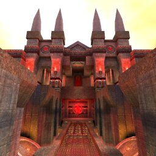

Clan 9 From Outer Space
Clan 9 From Outer Space Custom Maps @ kitty1
Custom Maps @ kitty1 ClanRing Tourney 3 Demos
ClanRing Tourney 3 Demos|  | The MOTW for Monday 9/25/00 was Cast Into Shadows (quartzctf1). |
MOTW QUICK LOOK
Cast Into Shadows is a fast, bilaterally symmetrical map with a straightforward layout.
- One of the ways out of the flagroom (Red/Blue Base) is straight ahead into an antechamber (Red/Blue Main Entrance). Then you have to turn either left or right. This brings you to another T-junction (Red/Blue Upper Perimeter) where you can turn back towards the flag again, or else head out toward the center (Red/Blue Threshold).
- If you don't like the straight-out-the-front-door method, you can go into the left or right wing of the base instead (Red/Blue Upper Entrance). The kicker with this route is that you will have to drop down to the base floor and then take a jumppad up to the wings. Or else rocket jump.
- From the wing, you can continue out toward the center area, or else take a teleporter. If you take the teleporter, you'll find yourself in a small chamber (Red/Blue Underground) with two other teleporters -- this chamber is not visible in the map above. The teleporter straight ahead of you will take you to the other wing of the base. The other teleporter takes you out into the center area, which I'll describe next.
N.B.: My first instinct on seeing a teleporter junction like this in a CTF map is that it would make chasing an FC impossibly tricky. For several reasons, though, I think it may work out OK in this map... this will be something to talk about more after we've played it.
- The center of the map (Central Battlefield), has a lowered walkway (The Plank) down the middle of it. This walkway ends in teleporters that take you to the blue or red team teleporter junction rooms. There are also jumppads to get you off the walkway onto the ground level above -- it seems as if these should take you all the way up to the ledge surrounding the center area, maybe passing through the central floating powerup, but nope. If you want to reach the ledge or the powerup, a rocket jump is in order.
Bug alert: Like Finnegan's Revenge, this map fails to be entirely successful at keeping people out of the "ceiling crawlspaces". You can check this bug out in a demo courtesy of Crewmaac. As with the Finnegan's bug, exploiting this flaw is off-limits. Please don't do it. (In any sort of official match you could make this grounds for a forfeit.)
Item breakdown: The middle powerup chooses between regen, invis, and quad, but it is three times as likely to pick regen as either of the others. There is also a regen in each team's Main Entrance. No shortage of armor/health: RA on The Plank, YA in one wing of the base and MH in the other wing, and another YA on the floor of the base; shards are scattered in various spots. RL in each base wing, and RG if you take the left branch when heading out the front route (PG on the right branch). LG is in each teleporter junction chamber.

 ) except where indicated otherwise
) except where indicated otherwise